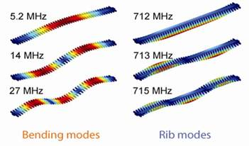
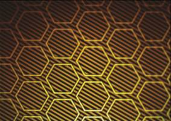
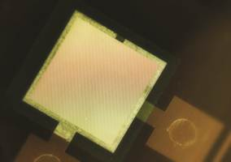
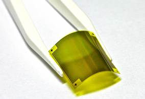
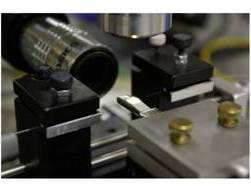

Optical and Electro-Mechanical Devices Group
[National Leading Research Laboratory]


1)“Linear frequency conversion via sudden merging of meta-atoms in time-variant metasurfaces." is published in Nature Photonics (2018).
2)“Electrical access to critical coupling of circular polarized waves in graphene chiral metamaterials," is published in Science Advances (September 2017).
3)“Designing whispering gallery modes via transformation optics,” is published in Nature Photonics (September 2016).
4) 석/박사과정 학생 및 박사후 연구원을 모집합니다. 메타물질이나 광역학에 관심이 있는 연구원들의 지원을 바랍니다. 전공은 기계공학, 물리, 전자, 재료, 수학 등 다양한 분야의 연구원들의 지원을 장려합니다.
5) 개별연구/URP에 관심이 있는 학부생을 모집합니다.
Our group focuses on the physics and engineering of light on a mesoscopic-scale ranging from tens of microns down to tens of nanometers. In this regime, myriads of fascinating optical phenomena can be explored both theoretically and experimentally. Current research topics include:
Metamaterials - Pursuing novel artificial functionalities at optical frequency that are achievable only with metamaterials with the help of nano/micro-scale fabrication
Optomechanics - Radiation-pressure-induced regenerative mechanical amplification or cooling of an optomechanical micro- or nanoresonators and the related physical phenomena







Optical and Electro-Mechanical Devices Group, B. Min Group @KAIST